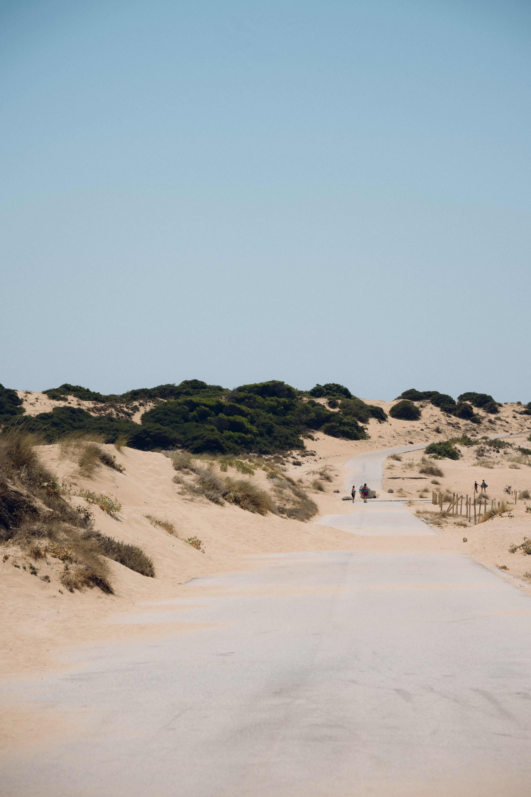
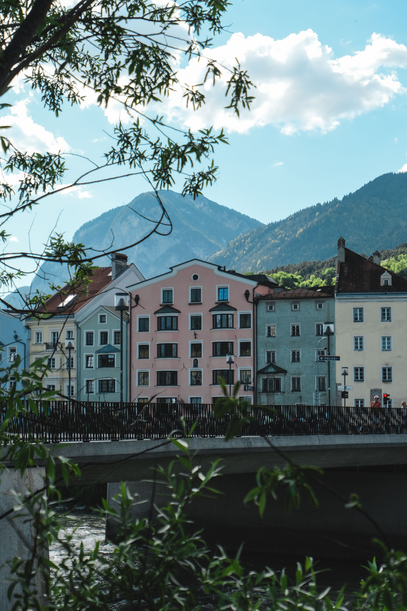
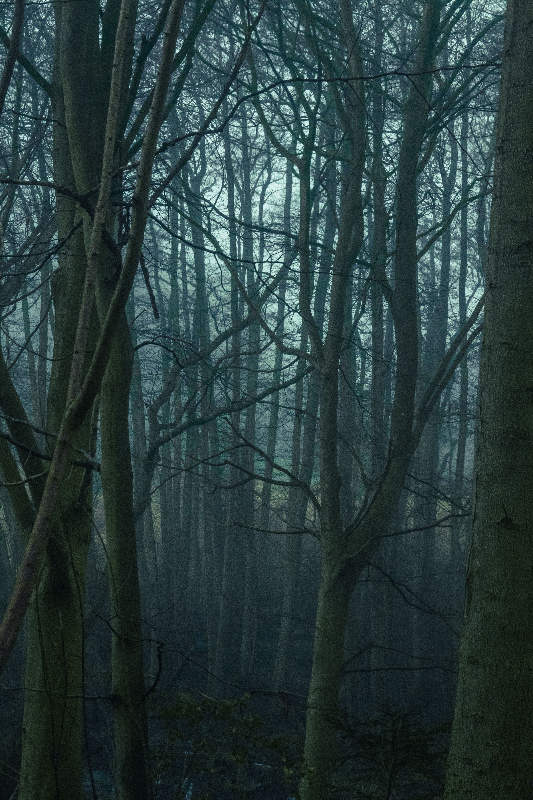
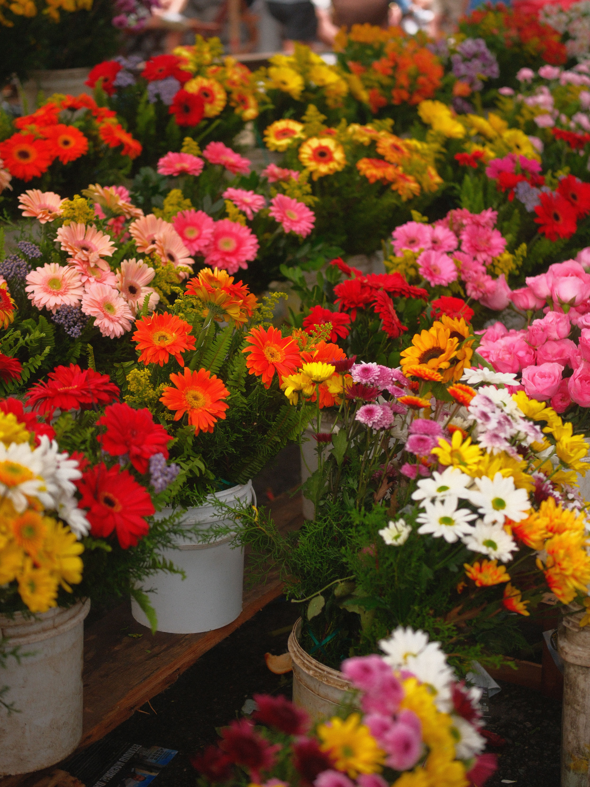
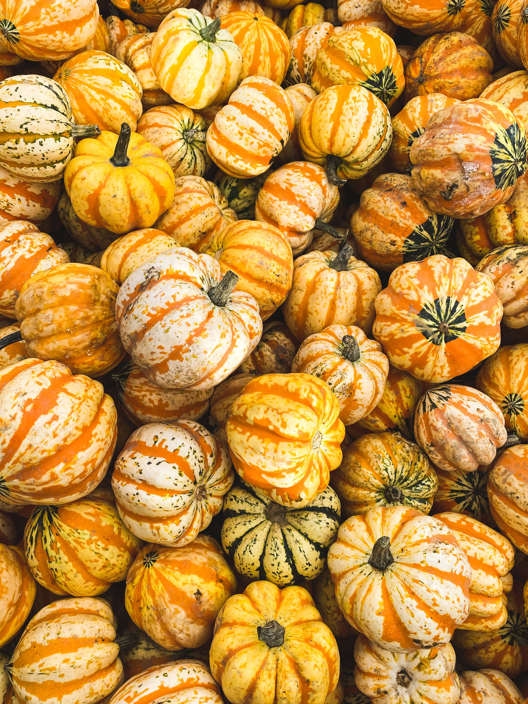
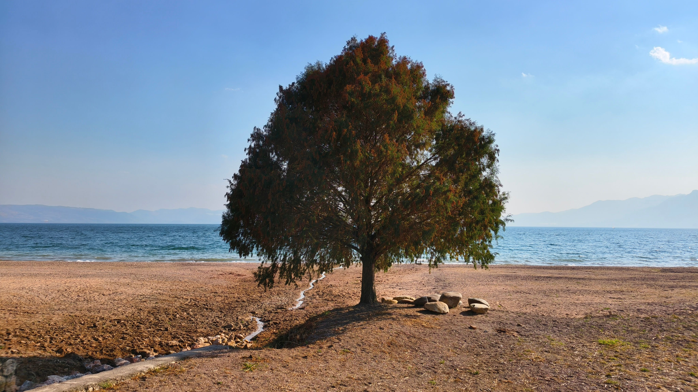
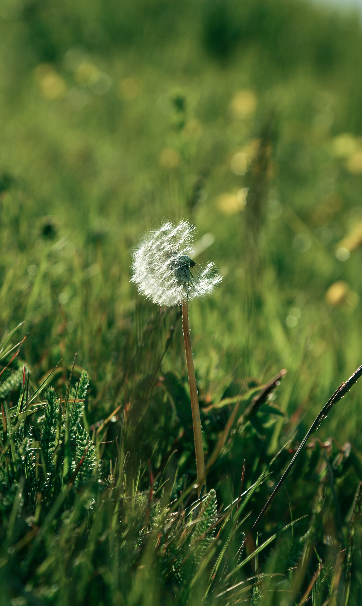
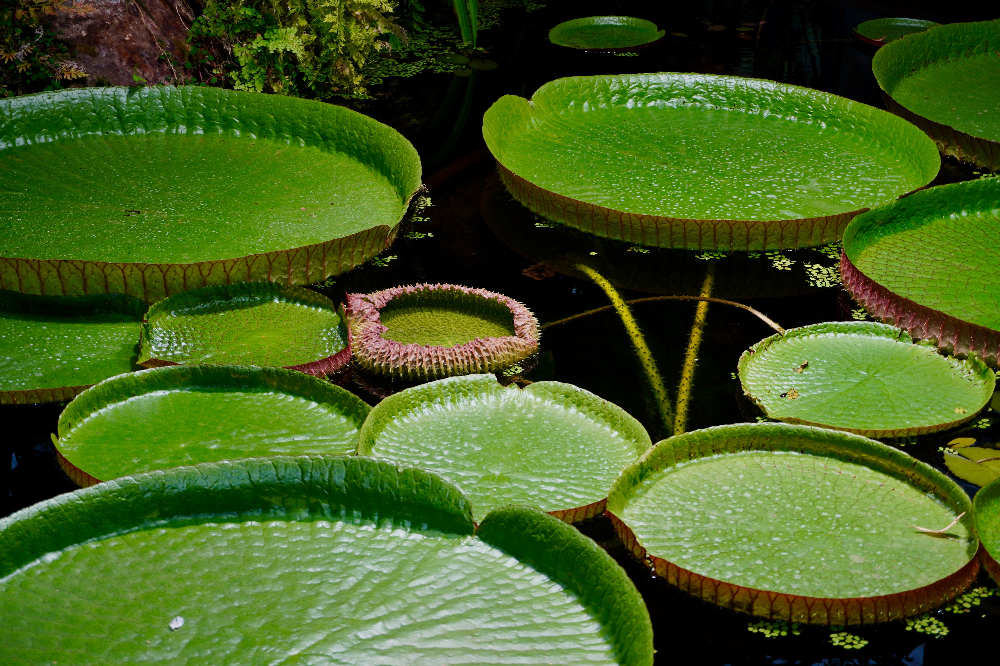

Landscape and portrait photography · Springfield, Virginia








Reflection: Much like my previous project, completing this assignment was much easier thanks to the CSS Grid Garden Challenge, which I used for guidance.
I think that website perfectly demonstrated the various grid concepts in a digestible manner.
The most difficult grid concept was minmax as a part of grid-template-columns, as it was hard for my to pick a specific range appropriate for my website.
A real life example of CSS grids I could fine is the NVCC website, specifically the student resources page.
A grid is used for the various links underneath the "Available Resources" line.
Overall, I had a pretty good time setting everything up, with the hardest aspect being finding the appropriate pictures with descriptive figcaptions.